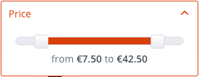

SearchBundle
The Shopware\Bundle\SearchBundle defines how Shopware searches for different product lists. Classes defined inside this bundle are independent from the underlying search engine, and can be reused across different search engine implementations.
Concept - Small example
The following example selects a list of products assigned to the category with id 3 and sorts the result set by the cheapest price.
$criteria = new Criteria();
$criteria->limit(10);
$criteria->addCondition(new CategoryCondition([3]));
$criteria->addSorting(new PriceSorting());
$context = $this->get('shopware_storefront.context_service')->getShopContext();
$service = $this->get('shopware_search.product_number_search');
/**@var $result ProductNumberSearchResult*/
$result = $service->search($criteria, $context);
$numbers = [];
foreach($result->getProducts() as $product) {
$numbers[] = $product->getNumber();
}
This small example shows how the product number search can be used.
Reference to SearchBundleDBAL
As already described, the Shopware\Bundle\SearchBundle defines only how product lists are selected and which conditions and sorting criteria are used to restrict or modify the result set.
The SearchBundle contains no specific search engine implementation, like Doctrine\ORM or PDO, and can't be used as standalone search mechanism.
As default for the ProductNumberSearch, Shopware uses Shopware\Bundle\SearchBundleDBAL, which implements the interfaces required by Shopware\Bundle\SearchBundle to use it as product search implementation.
The Shopware\Bundle\SearchBundleDBAL is based on the Doctrine\DBAL\Query\Builder.
ShopContextInterface
A ShopContext contains all shop related data for the current request. (shop id and details, customer group, ...) For more information, see Shopware\Bundle\StoreFrontBundle\README.md
This context is used in all Shopware bundle services, and can be accessed by getting the context_service from the DI container.
Concept - StoreFrontCriteriaFactory
The StoreFrontCriteriaFactory class allows you to generate different criteria objects for a specific context.
The criteria classes are generated from the provided Request class and represent the different conditions and sorting criteria provided in the request parameters.
Example: The request parameter sSupplier contains a list of supplier ids which will be injected into a ManufacturerCondition and assigned to the criteria object as filtering condition.
Shopware generates criteria objects for the following contexts:
- Search
- Listing
- AjaxSearch
- AjaxListing
- AjaxCount
- ProductNavigation
List of conditions and sortings
Conditions classes can be used to restrict the search result by different criteria. Each condition must implement the Shopware\Bundle\SearchBundle\ConditionInterface.
Example: If the Shopware\Bundle\SearchBundle\Criteria class contains the Shopware\Bundle\SearchBundle\Condition\ManufacturerCondition and
this condition contains the manufacturer ids 2 and 3, the search result contains only products from those two manufacturers.
Shopware contains the following core conditions:
-
CategoryCondition- Products which are assigned to one of the provided categories -
CustomerGroupCondition- Products which are not blocked for the provided customer group -
HasPriceCondition- Products which have a defined default customer group price -
ImmediateDeliveryCondition- Products which are available for immediate delivery -
ManufacturerCondition- Products from one of the provided manufactures -
PriceCondition- Products whose price is within the provided price range -
ProductAttributeCondition- Dynamic condition which can be used to restrict the result by specify product attribute -
PropertyCondition- Products which have one of the provided product property values -
SearchTermCondition- Products which match the provided search term -
ShippingFreeCondition- Products which have shipping free -
VoteAverageCondition- Products whose vote average is within the provided range
Sortings classes can be used to sort the product search results. Each sorting class has to implement the Shopware\Bundle\SearchBundle\SortingInterface.
Example: If the Shopware\Bundle\SearchBundle\Criteria class contains the Shopware\Bundle\SearchBundle\Sorting\PriceSorting, with the parameter ascending, products with the cheapest price are displayed first. Each sorting class can be used for ascending or descending sorting. The direction is specified in the class constructor.
-
PopularitySorting- Sorts by the sales and impression -
PriceSorting- Sorts by the listing price -
ProductAttributeSorting- Sorts by a product attribute -
ProductNameSorting- Sorts by the product name and description -
ReleaseDateSorting- Sorts by the configured product release date -
SearchRankingSorting- Sorts by the ranking of the used search term
Concept - Facets
Facets can be used to generate partial search results. Each facet class has to implement the Shopware\Bundle\SearchBundle\FacetInterface.
Example: If the Shopware\Bundle\SearchBundle\Criteria class contains the Shopware\Bundle\SearchBundle\Facet\ManufacturerFacet, the product number search returns a Shopware\Bundle\SearchBundle\FacetResultInterface which contains a list of all found product manufacturers that match the current search criteria.
Shopware contains the following core facets:
-
CategoryFacet- List of categories to which the resulting products are assigned -
ImmediateDeliveryFacet- Number of products which are immediate deliverable -
ManufacturerFacet- List of manufacturers to which the resulting products are assigned -
PriceFacet- Includes the minimum and maximum prices of the resulting products -
ProductAttributeFacet- Dynamic facet which can be used to select partial results of product attributes -
PropertyFacet- List of all product properties of the found products -
ShippingFreeFacet- Number of products which marked as shipping free -
VoteAverageFacet- Contains the minimum and maximum of the resulting products vote average
FacetResult
A facet result class contains the result of a generated facet. Each result facet has to implement the Shopware\Bundle\SearchBundle\FacetResultInterface.
Shopware contains the following core facet results, which can be reused for each data source:
| Facet | Description | Store front |
|---|---|---|
BooleanFacetResult |
Displays a checkbox filter in the store front | |
ValueListFacetResult |
Displays a multiple selection list for the facet. |  |
RadioFacetResult |
Displays a single selection list for the facet |  |
MediaListFacetResult |
Displays a multi selection media list for the facet |  |
RangeFacetResult |
Displays a range slider for the facet |  |
TreeFacetResult |
Displays a tree for the facet |  |
FacetResultGroup |
Groups a list of FacetResultInterface classes |
 |
This abstract architecture allows third party developers to integrate new facets without implementing their own styling for the store front.
Example: The ShippingFreeFacet and the ImmediateDeliveryFacet both use the ValueListFacetResult without defining their own template for the store front, but with different data sources.
You can find a installable ZIP package of an attribute example plugin here.
Full implementation - with condition (with DBAL)
The following example shows how the default SearchBundleDBAL implementation handles conditions.
Each condition inside the SearchBundleDBAL is handled by their own ConditionHandler.
Each ConditionHandler must implement the Shopware\Bundle\SearchBundleDBAL\ConditionHandlerInterface
You may register your own ConditionHandler via the services.xml of your plugin:
<!-- register condition handlers for dbal search implementation -->
<services>
<service class="YourPlugin\SearchBundleDBAL\Condition\CategoryConditionHandler" id="your_plugin.search_bundle_dbal.condition.category_condition_handler">
<tag name="condition_handler_dbal"/>
</service>
</services>
Each condition handler has to implement two methods:
-
supportsCondition- Checks if the condition can be handled by this class -
generateCondition- Handles the condition and extends the provided query
<?php
namespace YourPlugin;
use Shopware\Bundle\SearchBundleDBAL\ConditionHandlerInterface;
use Shopware\Bundle\SearchBundleDBAL\QueryBuilder;
use Shopware\Bundle\SearchBundle\ConditionInterface;
use Shopware\Bundle\SearchBundle\Condition\CategoryCondition;
use Shopware\Bundle\StoreFrontBundle\Struct\ShopContextInterface;
use Doctrine\DBAL\Connection;
class CategoryConditionHandler implements ConditionHandlerInterface
{
public function supportsCondition(ConditionInterface $condition)
{
return ($condition instanceof CategoryCondition);
}
public function generateCondition(
ConditionInterface $condition,
QueryBuilder $query,
ShopContextInterface $context
) {
$query->innerJoin(
'product',
's_articles_categories_ro',
'productCategory',
'productCategory.articleID = product.id
AND productCategory.categoryID IN (:category)'
);
$query->setParameter(
':category',
$condition->getCategoryIds(),
Connection::PARAM_INT_ARRAY
);
}
}
The generateCondition method extends the provided query with an inner join with the s_articles_categories_ro table, to select only products associated with the provided category ids.
The :category parameter is replaced by the setParameter function with an integer array.
Concept - Facet and Condition
Some facets and conditions belong together.
Example
The ManufacturerFacet returns a ValueListFacetResult, which is displayed in the store front as a filtering option for the user:
The user wants the product list to be filtered by the two selected manufacturers. The ManufacturerFacet should now
produce a ManufacturerCondition with the selected values, which will be used along with other filter criteria to produce the search result.
The ManufacturerCondition is also has to return an instance of FacetResultInterface to be rendered to the shop user. The ManufacturerFacet uses the ValueListFacetResult for this, like so:
$result = new ValueListFacetResult(
'manufacturer',
true,
'Store front label',
$items,
'sSupplier'
);
The ValueListFacetResult has the following constructor parameters:
-
$facetName- Name of the original facet -
$active- Flag if the facet result is already filtered -
$label- Label of the select box -
$values- Items of the select box -
$fieldName- Name of the form field
The $fieldName parameter defines which request parameter should be filled with the selected values.
All selected values are now provided in the next request in the sSupplier request parameter, which is the default parameter for the ManufacturerCondition.
Concept - Extendable
The linked plugin shows how the Shopware search bundle can be extended. It registers custom sorting, condition and facet for the store front and implements a default extension for the Shopware\Bundle\SearchBundleDBAL:
ProductSearch decorator
In most cases, only a list of product numbers is not enough for the store front.
The Shopware\Bundle\SearchBundle\ProductSearch class is a decorator, which allows the execution of a product number search, whose result sets contains a list of Shopware\Bundle\StoreFrontBundle\Struct\ListProduct structs.
A ListProduct struct contains all required data for a product to be display in the store front listings.
Internally, this decorator first executes the ProductNumberSearch and then converts the result using the configured Shopware\Bundle\StoreFrontBundle\Service\ListProductServiceInterface from the DI container.
Shopware 5.3 changes
Shopware 5.3 implements a new interface to handle facets: \Shopware\Bundle\SearchBundleDBAL\PartialFacetHandlerInterface. Each facet handler had to revert the provided criteria by their own to remove customer conditions. This behaviour is now handled in the \Shopware\Bundle\SearchBundleDBAL\ProductNumberSearch::createFacets
Old implementation:
/**
* @param FacetInterface $facet
* @param Criteria $criteria
* @param ShopContextInterface $context
* @return BooleanFacetResult
*/
public function generateFacet(
FacetInterface $facet,
Criteria $criteria,
ShopContextInterface $context
) {
$reverted = clone $criteria;
$reverted->resetConditions();
$reverted->resetSorting();
$query = $this->queryBuilderFactory->createQuery($reverted, $context);
//...
}
New implementation gets the "reverted" criteria as function parameter. This allows to switch between different filter modes.
public function generatePartialFacet(
FacetInterface $facet,
Criteria $reverted,
Criteria $criteria,
ShopContextInterface $context
) {
$query = $this->queryBuilderFactory->createQuery($reverted, $context);
//...
To support Shopware 5.3 and older versions inside the same plugin version, the following check has to be added at the top of the facet handler class:
<?php
namespace Shopware\Bundle\SearchBundleDBAL;
if (!interface_exists('\Shopware\Bundle\SearchBundleDBAL\PartialFacetHandlerInterface')) {
interface PartialFacetHandlerInterface
{
}
}
class MyHandlerClass implements FacetHandlerInterface, PartialFacetHandlerInterface
{
public function generateFacet(
FacetInterface $facet,
Criteria $criteria,
Struct\ShopContextInterface $context
) {
$reverted = clone $criteria;
$reverted->resetConditions();
$reverted->resetSorting();
return $this->generatePartialFacet($facet, $reverted, $criteria, $context);
}
public function generatePartialFacet(
FacetInterface $facet,
Criteria $reverted,
Criteria $criteria,
ShopContextInterface $context
) {
$query = $this->queryBuilderFactory->createQuery($reverted, $context);
//...
}
}
Optimized Batch Search
As of Shopware 5.3, it is possible to search for multiple critera objects at once. In addition, the fetch process for products will be minimized by fetching a product number only once. An optimization service will then try to optimize the search request by combining identical criteria objects into one. So there will be less search requests for identical criterias.
Another advantage is that you won't get the same results with identical searches.
Example: Emotion Component Handler
The emotion component handler make use of this service to increase the performance of loading a shopping world. Imagine you have three product boxes configured with topseller products of a category. Prior to 5.3, you will get the same product for each product box. As of 5.3, you will get different topseller products.
Usage
You will still be working with criteria objects, but before sending the search request, you have to add them to a Shopware\Bundle\SearchBundle\BatchProductSearchRequest.
$criteria = new Critera();
$criteria->addCondition(new CategoryCondition([3]));
$criteria->limit(3);
$anotherCriteria = new Critera();
$anotherCriteria->addCondition(new CategoryCondition([3]));
$anotherCriteria->limit(5);
$request = new BatchProductNumberSearchRequest();
$request->setProductNumbers('numbers-1', ['SW10004', 'SW10006']);
$request->setCriteria('criteria-1', $criteria);
$request->setCriteria('criteria-2', $anotherCriteria);
$result = $this->container->get('shopware_search.batch_product_search')->search($request, $context);
In this case, there are two identical criteria objects which can be merged easily by adding the limit and work with the offset when returning the results.
Every criteria object should be added with a unique key for the request. This is necessary to identify every search request and return the correct products.
$result->get('numbers-1'); // ['SW10004' => ListProduct, 'SW10006' => ListProduct]
$result->get('criteria-1'); // ['SW10006' => ListProduct, 'SW10007' => ListProduct, 'SW10008' => ListProduct]
$result->get('criteria-2'); // ['SW10009' => ListProduct, 'SW10010' => ListProduct, 'SW10011' => ListProduct, 'SW10012' => ListProduct, 'SW10013' => ListProduct]
The batch search will return a Shopware\Bundle\SearchBundle\BatchProductSearchResult which contains the results for every request.